A process is one of the most fundamental concepts in Operating Systems. Understanding processes is essential for understanding CPU scheduling, multithreading, concurrency, memory management, system calls, inter-process communication (IPC), and how Linux actually executes applications.
We will cover the concepts from both an Operating System design perspective and an implementation perspective, using Java-style pseudocode, Java, algorithms, data structures, and diagrams.
A process is an instance of a program in execution, managed by the Operating System.
For example, suppose you run:
java -jar payment-service.jarThe OS creates a process that contains:
The OS maintains information about the process so it can execute, suspend, resume, or terminate it.
Program vs. Process
| Program | Process |
|---|---|
| Passive executable code | Active execution of a program |
| Stored on disk | Exists as an OS-managed execution instance |
| Has no scheduling state | Has scheduling state |
| Does not require a PID | Has a PID |
Example: java executable | Example: running JVM instance |
A single program can have multiple simultaneously executing processes.
For example:
java -jar payment-service.jar &
java -jar payment-service.jar &Two separate JVM processes are created, normally with distinct PIDs and virtual address spaces.
Process vs. Thread
| Feature | Process | Thread |
|---|---|---|
| Purpose | Resource and isolation boundary | Unit of execution |
| Address space | Usually separate between processes | Shared within a process |
| Stack | Has at least one thread stack | Each thread has its own stack |
| CPU registers | Maintained per execution thread | Maintained per thread |
| Communication | IPC required for separate processes | Shared memory directly available |
| Failure isolation | Stronger isolation | Thread failure can affect entire process |
| Scheduling | Kernel schedules runnable tasks/threads | Kernel schedules runnable tasks/threads |
A Java application may look like:
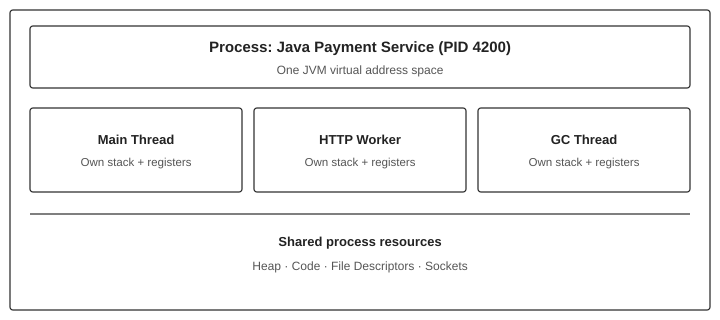
Important Linux detail: Linux represents each schedulable thread using a task_struct. Threads belonging to the same process can share address-space and resource structures. Therefore, a textbook process control block is a useful abstraction, but Linux’s actual implementation is more flexible.
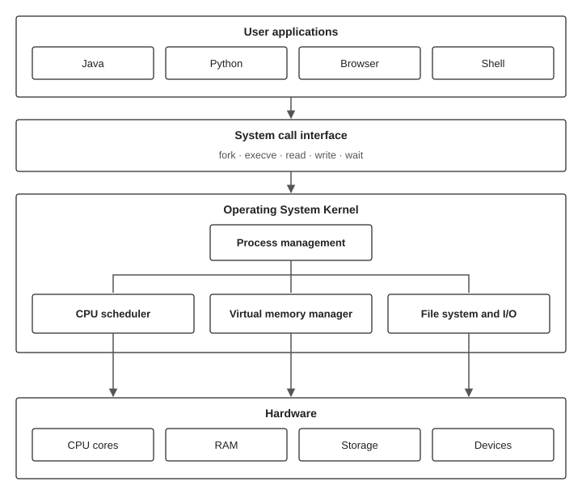
The kernel has several responsibilities:
A CPU executes instructions. The OS determines which process’s thread is allowed to execute and under what protection settings.
A process does not execute continuously from start to finish. It transitions through different states.
The five-state process model
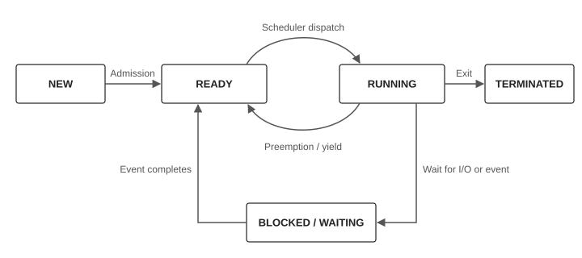
| State | Meaning | Example |
|---|---|---|
| New | OS is creating the process | Creating a task and memory structures |
| Ready | Can execute, waiting for CPU | Thread waiting in run queue |
| Running | Executing on a CPU | Thread processing a calculation |
| Blocked / Waiting | Cannot continue until an event | Waiting for socket data |
| Terminated | Execution has finished | Process exited |
Example: A database query
Suppose a Java service executes:
var result = jdbcTemplate.queryForList("SELECT * FROM orders WHERE id = 101");A possible execution sequence:
The blocked thread does not consume CPU time merely by waiting. However, its process still occupies memory and maintains other resources.
With nonblocking I/O, the application may register interest in socket events and continue other work rather than blocking that particular thread.
Additional states
Real operating systems have states beyond the basic five-state model.
SIGSTOP.D by ps.Linux process states do not correspond one-to-one with the simplified textbook states.
The Process Control Block is a conceptual data structure used by the OS to represent and manage a process.
Without the process’s saved execution state and resource metadata, the OS would not know how to resume it after a context switch.
PCB structure
Process Control Block — conceptual kernel data structure
| Component | Contents |
|---|---|
| Identity | PID, parent PID, credentials |
| State | Ready, running, blocked, exited |
| CPU context | Instruction pointer, stack pointer, registers |
| Scheduling | Policy, priority, runtime, queue metadata |
| Memory | Address-space descriptor, page-table root |
| Resources | File descriptors, sockets, signal information |
| Accounting | CPU time, execution statistics, exit status |
Example PCB structure
The following structure is educational and intentionally simplified. It is not a copy of Linux’s actual task_struct.
enum ProcessState { NEW, READY, RUNNING, BLOCKED, TERMINATED }
class CpuContext {
long instructionPointer;
long stackPointer;
long[] registers = new long[16];
}
class Process {
int pid;
int parentPid;
ProcessState state;
int priority;
long cpuTimeNs;
CpuContext context;
long pageTableRoot;
Object kernelStack;
Object openFileTable;
Process nextReady;
Process parent;
}Important fields:
pid: Identifies the process.state: Records whether execution is ready, running, or waiting.context: Represents information required to resume execution.pageTableRoot: Identifies the process’s virtual-memory translation structures.kernelStack: Refers to the kernel execution stack used by a task.nextReady: Allows a task to be linked into a scheduling queue.In real kernels, execution context may be distributed between task structures, architecture-specific fields, and kernel stacks rather than being stored in one simple CpuContext.
Actual Linux implementation
Linux uses a family of interconnected structures, including:
| Linux structure | Responsibility |
|---|---|
task_struct | Thread/task identity, scheduling, lifecycle |
mm_struct | Virtual address space |
vm_area_struct | Memory mapping/region |
files_struct | File descriptor table |
fs_struct | Filesystem-related context |
signal_struct | Shared signal-related state |
sched_entity | Fair scheduling accounting |
rq | Per-CPU scheduling run queue |
Linux uses a maple tree within mm_struct to organize virtual-memory areas.
Conceptually:
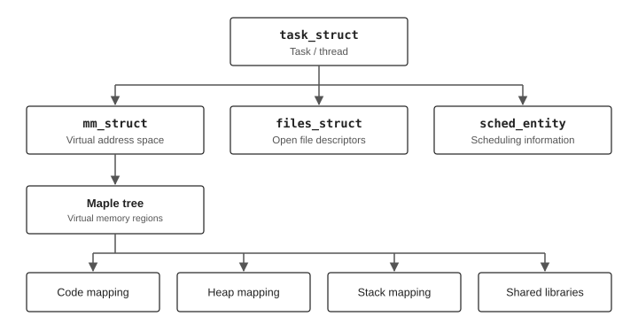
Two threads belonging to the same process generally share the mm_struct and appropriate resource tables, while each has its own execution state.
A process normally operates inside its own virtual address space.
A simplified layout of a typical native program is shown below.
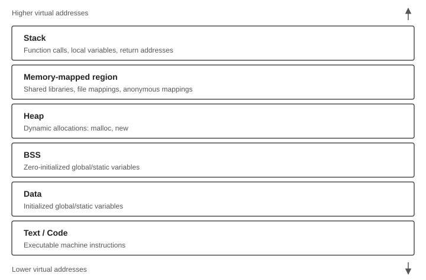
Conceptual layout only. Actual addresses, mapping order and stack locations depend on architecture, OS and ASLR. Multithreaded processes have multiple stacks.
What each region stores
Consider this program:
int globalCounter = 100; Initialized data
int uninitialized; BSS
void main() {
int local = 10; Stack
int[] ptr = allocate(1); Heap allocation
if (ptr == null) return;
ptr[0] = 50;
print("Global: " + addressOf(globalCounter));
print("BSS: " + addressOf(uninitialized));
print("Stack: " + addressOf(local));
print("Heap: " + addressOf(ptr));
free(ptr);
}A crucial distinction: the local pointer variable ptr normally lives on the stack, but the memory returned by allocate() resides in a dynamically allocated region.
Virtual memory vs. physical memory
Two processes can use the same virtual address while the addresses map to different physical memory.
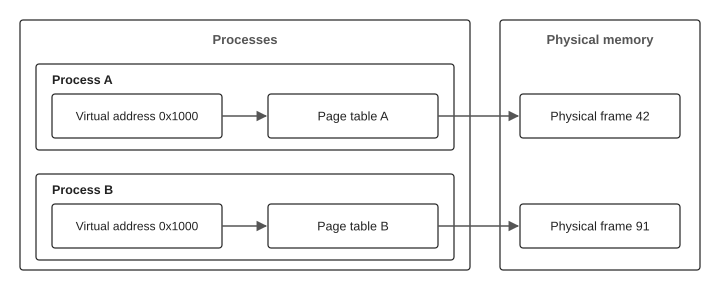
This is how memory isolation works at a high level.
The Memory Management Unit (MMU), together with page tables configured by the OS, translates virtual addresses to physical addresses and enforces access permissions.
There are deliberate exceptions to physical separation: processes may map the same shared-memory page or file-backed page.
Why virtual memory matters
Virtual memory provides:
fork(), exec(), and wait()In Unix-like operating systems, these are three of the most important process-related operations.
| Operation | Purpose |
|---|---|
fork() | Creates a child process |
execve() / execvp() | Replaces the current process’s program |
wait() / waitpid() | Waits for and collects child-process status |
exit() / _exit() | Terminates the calling process |
getpid() | Returns the current process ID |
getppid() | Returns the parent process ID |
How process creation works
Suppose a Linux shell executes:
ls -lA typical process lifecycle is:
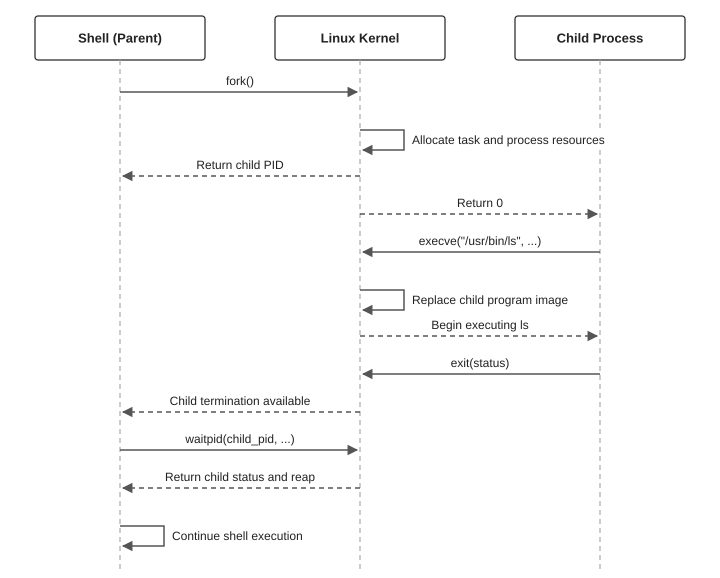
The parent and child may execute concurrently; their precise ordering is determined by scheduling.
Step 1: fork()
fork() creates a child process.
void main() {
int pid = fork();
if (pid < 0) { error("fork failed"); return; }
if (pid == 0) { Executed by child process
print("Child PID: " + getpid());
print("Parent PID: " + getppid());
} else { Executed by parent process
print("Parent created child: " + pid);
waitpid(pid);
}
}fork() returns different values depending on the execution context:
0 inside the child.-1 in the parent if creation fails.The child begins execution immediately after the fork() call, rather than restarting main().
Step 2: Copy-on-Write (COW)
Does fork() immediately copy all of the parent’s physical memory?
Normally, no. Linux uses Copy-on-Write to avoid eagerly duplicating ordinary writable memory pages. The parent and child initially share suitable physical pages, and a private copy is created when a shared copy-on-write page is written.
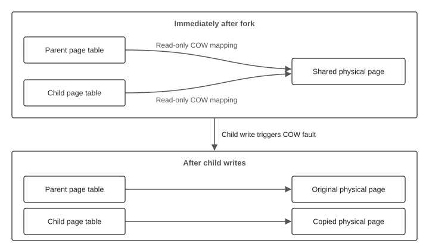
The diagram simplifies page permissions and mappings. Shared-memory mappings do not necessarily follow private COW behavior.
Example:
void main() {
int counter = 100;
int pid = fork();
if (pid < 0) { error("fork"); return; }
if (pid == 0) {
counter = 200;
print("Child: " + counter);
return;
}
waitpid(pid);
print("Parent: " + counter);
}Output:
Child: 200
Parent: 100The processes have independent logical copies of counter.
Step 3: exec()
The exec family replaces the current process’s executable image.
It does not create another process. Normally, its PID remains the same.
Step 4: waitpid()
The parent collects the child process’s exit status. This is important because terminated children can otherwise remain as zombies until their status is reaped.
Complete runnable example: fork() + exec() + waitpid()
void main() {
int pid = fork();
if (pid == -1) { error("fork"); return; }
if (pid == 0) {
exec("ls", "-l"); Child replaces its program with "ls"
error("exec"); Reached only if exec fails
exit(127);
}
ExitStatus status = waitpid(pid); Parent waits for child, retrying if interrupted
if (status.exited()) print("Child exit code: " + status.exitCode());
else if (status.signaled()) print("Child killed by signal: " + status.signal());
}Production systems may also use posix_spawn() for process creation. A process created by fork() from a multithreaded application requires additional care before exec() because only the calling thread survives in the child.
A process is a resource container and an execution environment. A thread is an execution path within that process.
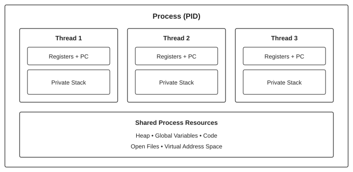
Each thread has its own
Threads of the same process share
This shared memory makes thread communication efficient, but also introduces race conditions and synchronization challenges.
User-level threads
Managed primarily by a user-space runtime or thread library.
Characteristics include fast runtime-managed scheduling, lower management overhead, and potentially large numbers of lightweight threads.
However, actual CPU parallelism and blocking behavior depend on how the runtime maps them onto OS threads.
Kernel-level threads
Managed and scheduled by the operating system kernel.
The OS can schedule them independently on CPU cores, block them individually, and perform context switches between them.
Thread mapping models
| Model | Mapping | Characteristics |
|---|---|---|
| Many-to-One | Many user threads → one kernel thread | No parallel CPU execution among those user threads |
| One-to-One | One user thread → one kernel thread | Native parallelism, higher per-thread cost |
| Many-to-Many | Many user threads → multiple kernel threads | Flexible scheduling and resource management |
| Two-Level | Many-to-Many with optional binding | Some user threads can bind to kernel threads |
For example, mainstream JVM platform threads generally use one-to-one native thread mapping, while Java virtual threads are scheduled by the JVM onto a smaller set of carrier platform threads.
From an OS perspective, a simplified thread lifecycle contains five major states.
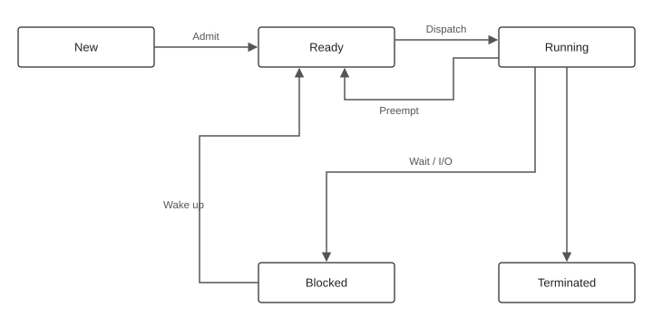
Simplified OS scheduling-state model.
| State | Meaning |
|---|---|
| New | Thread has been created |
| Ready | Eligible for execution, waiting for CPU |
| Running | Currently executing on a CPU |
| Blocked / Waiting | Waiting for I/O, synchronization, or another event |
| Terminated | Execution completed |
Note: These are conceptual OS states. Java’s Thread.State uses different categories: NEW, RUNNABLE, BLOCKED, WAITING, TIMED_WAITING, and TERMINATED. Java RUNNABLE includes threads that may be waiting for CPU scheduling.
A system may have hundreds or thousands of runnable tasks, but a CPU logical processor executes only one thread’s instruction stream at a particular instant.
The scheduler decides which runnable task executes next.
Important scheduling data structures
An OS maintains structures conceptually similar to:
| Data structure | Purpose | Common implementation |
|---|---|---|
| Process lookup | Locate tasks by identity | Hash tables, ID mappings |
| Ready/run queue | Track runnable tasks | FIFO, tree, heap, priority queues |
| Wait queue | Track tasks waiting for events | Linked lists or specialized queues |
| Timer queue | Track future wakeups | Timer wheels, heaps, trees |
| Scheduling metadata | Account for fairness and priority | Per-task fields, trees |
Real Linux scheduling maintains per-CPU run queues and policy-specific scheduling structures rather than one universal global ready queue.
Scheduler queue flow
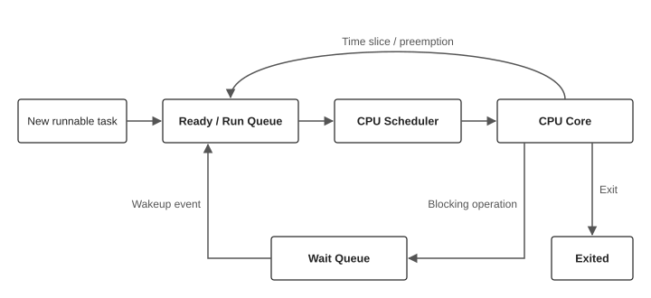
Scheduler vs. Dispatcher
These concepts have different responsibilities.
Scheduler: Selects the task that should run.
Dispatcher: Performs the operations required to transfer CPU execution to the selected task, including the appropriate context switch.
The dispatcher is part of the scheduling mechanism.
A context switch happens when the OS stops executing one task and resumes another.
For example:
CPU running Task A
↓
Task A's execution context saved
↓
Task B's execution context restored
↓
CPU running Task BThe saved context includes execution state sufficient to resume a task, such as the instruction pointer, stack pointer, and registers.
Context-switch workflow
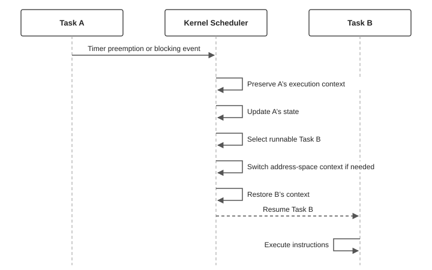
Simplified scheduling algorithm
schedule():
previous = current_task
if previous is still runnable:
make previous eligible for scheduling
next = choose_next_runnable_task()
if next != previous:
preserve previous execution context
if address spaces differ:
activate next address space
switch kernel execution context
restore / resume next taskThis is conceptual pseudocode. Actual context switching requires architecture-specific routines, careful synchronization, and a precise handling of execution stacks and interrupt/preemption state.
Context-switch overhead
Context switching is not free.
It may involve:
An important nuance: entering kernel mode does not necessarily mean a context switch occurs. A system call may execute and return to the same task.
Similarly, a task can be preempted and later resumed without another application thread initiating the change.
Process switching vs. thread switching
Switching between threads that share an address space can avoid changing the address-space context. Switching between independent processes generally requires more memory-context work.
However, the precise cost depends on hardware, OS implementation, cache state, and which resources are shared.
Scheduling algorithms determine execution order.
Scheduling performance metrics
Suppose:
AT: Arrival time.BT: CPU burst time.CT: Completion time.ST: First execution start time.Then:
Turnaround Time = CT - AT
Waiting Time = CT - AT - BT
Response Time = ST - AT
These formulas apply to the simplified CPU-burst scheduling model used below. Real processes may have multiple bursts, I/O waits, sleep time, and other complexities.
First Come First Served (FCFS)
FCFS executes processes in arrival order.
Data structure: FIFO queue.
enqueue(new_process)
while queue not empty:
process = dequeue()
run process until CPU burst completesCharacteristics: simple, non-preemptive, but can suffer from the convoy effect, where short jobs wait behind long jobs.
Shortest Job First (SJF)
Select the process with the smallest next CPU burst.
Data structure: Min-heap or sorted queue.
select ready process with minimum CPU burst
run until the burst completesSJF can minimize average waiting time for a fixed set of available jobs under suitable assumptions, but actual future CPU burst lengths are generally unknown.
A non-preemptive SJF scheduler may cause long jobs to wait excessively.
Shortest Remaining Time First (SRTF)
SRTF is the preemptive version of SJF.
when a process arrives or scheduling is reconsidered:
choose ready process with shortest remaining CPU time
preempt current task if necessaryIt favors short tasks, but can cause starvation for long jobs under continuous arrivals of short jobs.
Round Robin (RR)
Round Robin gives each runnable task a limited CPU time quantum.
Data structure: Circular FIFO queue.
while processes remain:
process = dequeue()
run process for at most QUANTUM
if process finished:
mark completed
else:
enqueue(process)RR is useful for responsiveness and time-sharing.
The quantum is important:
Priority Scheduling
Select the highest-priority ready task.
Data structure: Priority queue or policy-specific queues.
It can be preemptive or non-preemptive.
One issue is starvation. A common textbook mitigation is aging, which gradually increases the effective priority of tasks that have waited for a long time.
Multilevel Feedback Queue (MLFQ)
MLFQ uses several priority levels and dynamically moves tasks between them.
Typical rules:
MLFQ attempts to distinguish CPU-intensive from interactive workloads using observed behavior.
Algorithm comparison
| Algorithm | Preemptive? | Selection data structure | Main drawback |
|---|---|---|---|
| FCFS | No | FIFO queue | Convoy effect |
| SJF | No | Min-heap | Burst prediction, starvation |
| SRTF | Yes | Min-heap | Starvation, prediction |
| Round Robin | Yes | FIFO queue | Quantum sensitivity |
| Priority | Either | Priority queue | Starvation |
| MLFQ | Yes | Multiple queues | Tuning complexity |
Consider three processes, all CPU-bound for this example.
| Process | Arrival time | CPU burst |
|---|---|---|
| P1 | 0 | 8 |
| P2 | 1 | 4 |
| P3 | 2 | 2 |
All times are abstract scheduling units.
FCFS
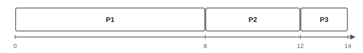
P1: 0–8 · P2: 8–12 · P3: 12–14
Average waiting time:
(0+7+10)/(3)=5.67
SJF (non-preemptive)
P1: 0–8 · P3: 8–10 · P2: 10–14
At time 0, only P1 has arrived, so non-preemptive SJF starts P1.
Average waiting time:
(0+6+9)/(3)=5.00
SRTF
0 1 2 4 7 14
| P1 | P2 | P3 | P2 | P1 |Average waiting time:
(6+2+0)/(3)=2.67
Round Robin (quantum = 2)
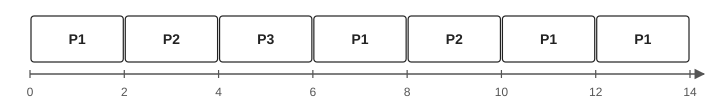
Each segment is 2 time units. P3 finishes at 6, P2 at 10, P1 at 14.
| Process | Completion | Turnaround | Waiting | Response |
|---|---|---|---|---|
| P1 | 14 | 14 | 6 | 0 |
| P2 | 10 | 9 | 5 | 1 |
| P3 | 6 | 4 | 2 | 2 |
| Average | — | 9.00 | 4.33 | 1.00 |
Compare the algorithms
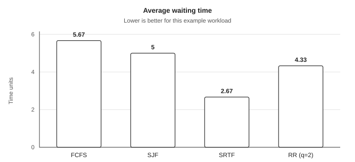
SRTF gives the lowest average waiting time for this specific workload, but it is not necessarily the best real-world policy. Fairness, responsiveness, deadlines, throughput, and predictability are also important.
This is a standalone educational scheduler simulator. It models arrivals, CPU bursts, a ready queue, completion times, and scheduling metrics.
It does not perform actual OS context switching.
class Task {
int pid, arrival, burst, remaining, firstStart = -1, completion = -1;
Task(int pid, int arrival, int burst) { this.pid = pid; this.arrival = arrival; this.burst = burst; this.remaining = burst; }
}
void main() {
Task[] p = { new Task(1, 0, 8), new Task(2, 1, 4), new Task(3, 2, 2) }; Sorted by arrival time
int n = p.length, quantum = 2;
Queue<Integer> ready = new ArrayDeque<>(); Circular ready queue
int next = 0, finished = 0, time = 0;
double totalWait = 0, totalTurnaround = 0;
while (finished < n) {
if (ready.isEmpty() && next < n && time < p[next].arrival) time = p[next].arrival; Skip idle CPU time
while (next < n && p[next].arrival <= time) ready.add(next++); Admit newly arrived processes
int i = ready.remove(); Select next runnable process
if (p[i].firstStart == -1) p[i].firstStart = time;
int slice = Math.min(p[i].remaining, quantum);
print("t=" + time + ".." + (time + slice) + ": P" + p[i].pid);
p[i].remaining -= slice;
time += slice;
while (next < n && p[next].arrival <= time) ready.add(next++); New arrivals enter before requeueing the previous task
if (p[i].remaining > 0) ready.add(i);
else { p[i].completion = time; finished++; }
}
print("PID WT TAT RT");
for (Task t : p) {
int turnaround = t.completion - t.arrival;
int waiting = turnaround - t.burst;
int response = t.firstStart - t.arrival;
print("P" + t.pid + " " + waiting + " " + turnaround + " " + response);
totalWait += waiting;
totalTurnaround += turnaround;
}
print("Average waiting=" + totalWait / n + ", turnaround=" + totalTurnaround / n);
}Verified output
t= 0.. 2: P1
t= 2.. 4: P2
t= 4.. 6: P3
t= 6.. 8: P1
t= 8..10: P2
t=10..12: P1
t=12..14: P1
PID WT TAT RT
P1 6 14 0
P2 5 9 1
P3 2 4 2
Average waiting=4.33, turnaround=9.00Algorithm complexity
With processes already sorted by arrival:
The number of dispatches depends on process CPU bursts and the quantum.
For a process with burst length B_i, it normally needs approximately ⌈ B_i/q ⌉ dispatches, where q is the quantum.
If the arrival times are unsorted, sorting adds O(nlog n).
Linux does not directly use basic FCFS, SJF, or simple textbook Round Robin for all regular applications.
Historically, Linux relied on the Completely Fair Scheduler (CFS) for ordinary fair scheduling.
Beginning with Linux kernel 6.6, Linux began transitioning its fair-scheduling selection mechanism to EEVDF — Earliest Eligible Virtual Deadline First.
Its central concepts include:
Simplified decision algorithm:
pick_next_fair_task():
eligible = runnable tasks with nonnegative lag
next = eligible task with earliest virtual deadline
return nextThe real implementation uses optimized data structures and more detailed rules.
Linux also supports scheduling policies and classes for real-time work, including SCHED_FIFO, SCHED_RR, and SCHED_DEADLINE. Those policies are distinct from the normal fair scheduler.
Since different processes usually have separate virtual address spaces, they need OS-provided mechanisms to exchange information.
Common IPC mechanisms:
| Mechanism | How it works | Typical use |
|---|---|---|
| Pipe | Byte stream between endpoints | Shell pipelines, parent-child IPC |
| Named pipe (FIFO) | Pipe with filesystem name | Local process communication |
| Unix domain socket | Bidirectional local socket | Local services and daemons |
| TCP socket | Network byte stream | Microservices, network applications |
| Shared memory | Multiple processes map shared pages | High-throughput local communication |
| Message queue | OS-managed message exchange | Asynchronous IPC |
| Signal | Asynchronous event notification | Termination, control, notification |
Example: Parent-child IPC through a pipe
Here is a Linux/Unix example.
void main() {
Pipe pipe = new Pipe();
int pid = fork();
if (pid == -1) { error("fork"); return; }
if (pid == 0) { Child writes into pipe
pipe.closeReadEnd();
pipe.write("Hello from child");
pipe.closeWriteEnd();
exit(0);
}
pipe.closeWriteEnd(); Parent reads from pipe
String message = pipe.read(127);
if (message != null) print("Parent received: " + message);
pipe.closeReadEnd();
waitpid(pid);
}Expected output:
Parent received: Hello from childThis example sends a short message with one write() and one read(). Production pipe protocols must handle partial reads/writes, interruption, EOF, and message framing.
Java applications also run inside OS processes.
The JVM provides Java-level APIs, while process creation, scheduling, and memory protection are ultimately implemented by the OS.
Starting a process with ProcessBuilder
Reading the output of a child process:
void main(String[] args) throws Exception {
System.out.println("Parent PID: {ProcessHandle.current().pid()}");
var processBuilder = new ProcessBuilder("find");
Process child = processBuilder.start();
System.out.println("Child PID: {child.pid()}");
InputStream inputStream = child.getInputStream();
InputStreamReader isr = new InputStreamReader(inputStream);
BufferedReader reader = new BufferedReader(isr);
var data = new StringBuilder();
while (true) {
String line = reader.readLine();
if (line == null) break;
data.append(line).append('\n');
}
int retval = child.waitFor();
System.out.println("Child exit code: {retval}");
if (retval == 0) System.out.println("{data}");
}Java thread creation is different:
Thread thread = new Thread(() -> {
System.out.println("Worker thread");
});
thread.start();Thread.start() creates a new execution thread inside the same Java process, not a separate JVM process.
ProcessBuilder.start() launches another OS process. The JVM may use different platform-specific process-creation mechanisms; it is not guaranteed to issue a simple fork() in every implementation.
Practical Spring Boot example
Imagine three Spring Boot microservices running on one Linux server.
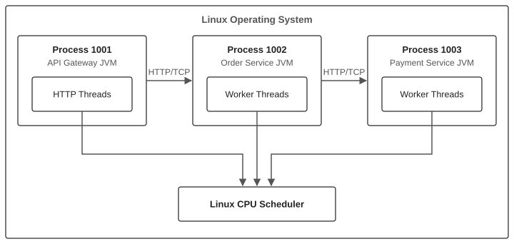
Each JVM process normally has its own:
Each JVM may have many threads competing for CPU time.
If one JVM process crashes, the OS does not automatically terminate the other JVMs. However, dependent services may still experience failures through network calls or lost communication.
Normal termination
A process normally terminates when its program completes or explicitly exits.
return;or:
exit(0);The OS releases most of its resources, while child exit status may remain available for its parent to collect.
Zombie process
A zombie is a process that has finished executing but still has termination information awaiting collection.
Parent Process
|
+---- Child executes
|
v
Child exits
|
v
ZOMBIE state
|
v
Parent calls wait()
|
v
Child reapedA zombie is not actively executing instructions. Its ordinary user-space memory has been released, but a small amount of kernel process bookkeeping remains.
Orphan process
An orphan is a still-running child whose parent has terminated.
On Linux, such children are reparented to an appropriate child subreaper or to an init process in the relevant PID namespace.
Being orphaned does not itself mean a process becomes a zombie.
Signals
Signals are another important process-management mechanism.
| Signal | Typical meaning |
|---|---|
SIGTERM | Request termination |
SIGKILL | Force termination; cannot be caught or ignored |
SIGSTOP | Stop execution |
SIGCONT | Continue stopped execution |
SIGINT | Interrupt, commonly Ctrl+C |
SIGCHLD | Notification of child state changes |
Example:
kill -TERM 1234
kill -KILL 1234SIGTERM allows an application to implement graceful shutdown. SIGKILL does not give the application an opportunity to run ordinary shutdown handlers.
See the Linux signal(7) manual.
These commands are useful when diagnosing real processes, including Java and Spring Boot applications.
| Command | Purpose |
|---|---|
ps aux | List process information |
ps -ef | List processes with parent PID |
top | Monitor CPU and memory usage |
htop | Interactive process monitoring, if installed |
pstree -p | Display parent-child process tree |
pidof java | Find Java process PIDs |
kill -TERM PID | Request termination |
renice | Change scheduling nice value |
taskset | Inspect or control CPU affinity |
strace | Trace system calls, if installed |
Inspect scheduling details
ps -eo pid,ppid,stat,pri,ni,comm --sort=pidPID: Process ID.PPID: Parent process ID.STAT: Process state.PRI: Scheduler priority display.NI: Nice value.COMM: Command name.Inspect the current shell process
cat /proc/$$/statusInspect virtual-memory mappings:
cat /proc/$$/mapsInspect open file descriptors:
ls -l /proc/$$/fdInspect individual threads in a Java process
top -H -p <PID>This shows thread-level activity within the selected process, subject to your system’s tools and permissions.
Processes also act as resource-management and protection boundaries.
The OS manages several mechanisms:
Memory protection: Page tables prevent arbitrary access to another process’s private memory.
CPU scheduling: The scheduler shares CPU resources across runnable tasks.
Credentials: User and group identities, capabilities, and access-control systems limit permitted actions.
File descriptors: Each process accesses opened files and sockets through OS-managed handles.
Resource limits: The OS can restrict memory, CPU usage, open files, and the number of tasks.
Namespaces and cgroups: Linux can isolate selected views of system resources and account for or control resource consumption. These are fundamental building blocks of Linux containers.
For example, a Docker container is not a separate kernel. Containerized processes execute under the host Linux kernel, with isolation and resource-control features applied.
Suppose a request reaches a Spring Boot payment application.
Client
|
v
Linux network stack
|
v
JVM process / network socket
|
v
Worker thread becomes runnable
|
v
Linux CPU scheduler
|
v
Worker thread executes Java code
|
v
Database request is sent
|
v
Thread waits for response
|
v
Another runnable task uses CPU
|
v
Database response arrives
|
v
Waiting thread is woken
|
v
Scheduler eventually runs it
|
v
Java code processes response
|
v
HTTP response is sentThis example combines nearly every process-management concept:
The exact transitions vary with synchronous vs. asynchronous I/O, JVM implementation, CPU availability, and network activity.
| Concept | Key takeaway |
|---|---|
| Process | Running program instance with OS-managed resources |
| PCB | Process metadata and execution state abstraction |
| PID/PPID | Process and parent identity |
| Process states | Ready, running, blocked, terminated, etc. |
| Virtual memory | Protected process address space |
fork() | Creates a child process |
| Copy-on-Write | Avoids eager duplication of private memory |
exec() | Replaces the current program image |
waitpid() | Waits for and reaps child termination |
| CPU scheduler | Chooses runnable tasks for CPUs |
| Context switch | Transfers execution between tasks |
| Ready queue | Holds tasks eligible to run |
| Wait queue | Holds tasks waiting for events |
| FCFS/SJF/SRTF/RR | Foundational scheduling algorithms |
| EEVDF | Modern Linux fair-scheduling approach |
| IPC | Communication across process boundaries |
| Signal | Asynchronous control/notification mechanism |
| Zombie | Exited child awaiting reaping |
| Orphan | Running child whose parent has exited |
| Process isolation | Memory and resource protection boundary |
Final mental model
The most useful way to understand a process internally is to separate three concerns:
A process provides the execution environment and resource boundary; its threads are the actual schedulable execution streams. The kernel coordinates both using data structures, scheduling algorithms, virtual memory, and system calls.
That distinction is the foundation for understanding how multitasking, concurrency, and modern operating systems work.